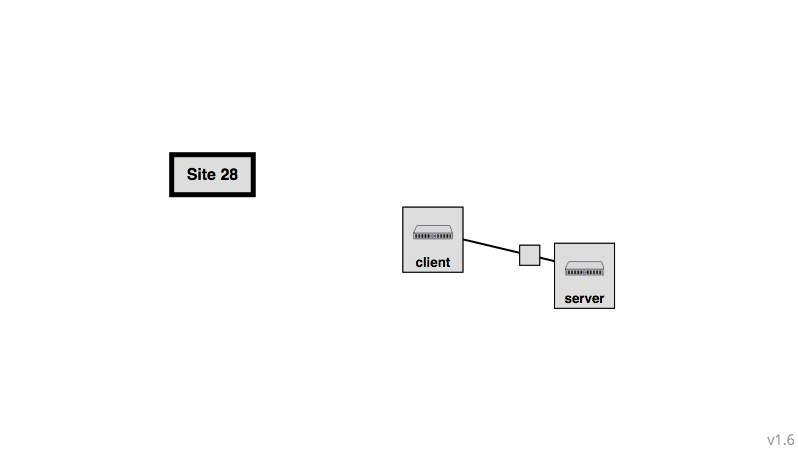
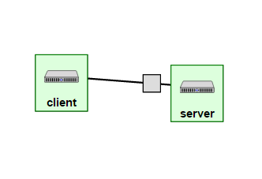
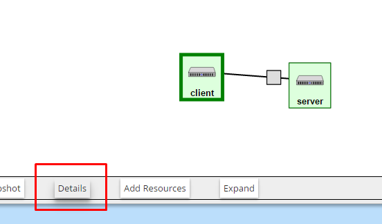
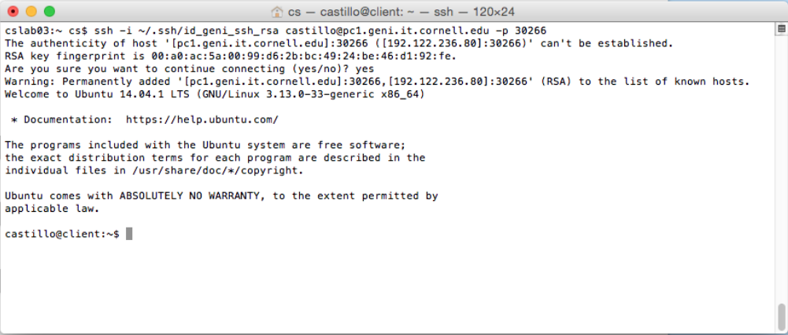
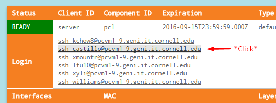

Getting Started! Part 2 - Hello GENI
Hello GENI Experiment - Reserving Resources
- In this lab, you will be running your first GENI experiment.
- At the GENI portal home page, click the New slice button.

- Here, you need to name the slice. Something like
[yourLastName]HelloWorld will be fine.
- Next, click the Add Resources button near the top of the page.
- In the Choose Rspec filed at the bottom of the page, select the existing Hello GENI option. The follwing topology should appear on the screen.

- Then, click on the Site node and choose any aggregate with InstaGeni or ExoGENI in its name.

- Finally, click the Reserve Resource button at the bottom of the page.
Hello GENI Experiment - SSH to the Server Node/PuTTY Usage Guide
- After you send the request to reserve the resources (which you did in the previous section), hover your mouse over the "Home" button at the top of the page, and select "Slices". On this page, click on the slice that you created.
- If the two boxes look gray, it means that they are not ready yet. If they are green, it means that they have been reserved successfully and that you may now use them.

- Now, looking on the GENI website, click on the "Details" button on the page that displays the topology for your slice.

- For any one of your nodes, you will copy the
username@host_address -p some_port for part of the command used to log in to the specified node.

- To connect to one of your nodes, execute the following command:
ssh -i ~/.ssh/id_geni_ssh_rsa username@host_address -p some_port
- If you are asked if you want to continue, say "yes". If prompted for a passphrase, enter the passphrase from when you generated the SSH key pairs. (It is important to note that as you write your passphrase it will not be displayed in the terminal!)

- Now, the key will be configured for your SSH connections to the GENI rack your resources use (In my case Cornell, yours might be different depending on the site you chose). So, when connecting to your nodes later on, you will only have to go to the "Details" page of the slice, like you did earlier, and click on the SSH hyperlink for the node you want to connect to. You might have a pop-up asking you if you want to allow the web browser to use the application. Allow it, and you should be connected to your node.
- For example, if I wanted to connect to my Server node, I would just click on the "Details" page, like so:

- *** Although the screenshots for the rest of the tutorial show a black terminal, which is the SSH terminal used in Windows, the commands executed in these are the same for MAC ***
Hello GENI Experiment - Continued
- On your Server terminal, type in the following command:
ifconfig
- Now, you should be able to see information corresponding to your Server node. Specifically, you should see information about "eth0", "eth1", and "lo".

- To the right of "eth0", you can notice that it says "inet addr" - the numbers right next to that make up the IP address of your node. Try copying and pasting this into your browser of preference, and click on "Web Server Statistics" to see the statistics corresponding to the web server on your node.

- Refreshing the page multiple times will yield different statistical information on the page. Refresh the page multiple times, and take note of these changes. These changes occur because you are requesting information every time you click the refresh button.
- Next, hit the back button on your web browser. This time, click on the second link, which reads "Logs from the iperf Server". This shows statistical information from the iperf server.
Hello GENI Experiment - Generating Traffic Between Nodes
- To generate traffic, you will have to open a connection to the Client node. You can do so by following the same instructions you used to connect to the Server node; the only difference is that you will have to click the Client node on GENI, as opposed to the Server node, when trying to find out the host name and port.
- After you connect successfully, your terminal for the Client should look similar to this:

- To start generating traffic between the Client and Server, execute the following command on the terminal of the Client:
iperf -c server -P 2
- Try using the same command again, switching out the number 2 for another positive number (Don't make it too big!). You should notice different results on the output.
Hello GENI Experiment - Finishing Up
- On your Server terminal, type "exit", and hit enter in order to exit out of the Server node.
- Do the same on the Client: type "exit" and hit enter to exit the Client node.
- Lastly, looking at the webpage for your slice in the GENI Portal, click the "Delete" button, and click "Yes" on the pop-up. This will make the resources you reserved available again for other users.
Related Readings and Videos
- SSH Private Keys: Link.
- Network Switch: Link.
- WinSCP Installation and Usage Guide: Link.
- Wireshark Installation and Usage Guide: Link.